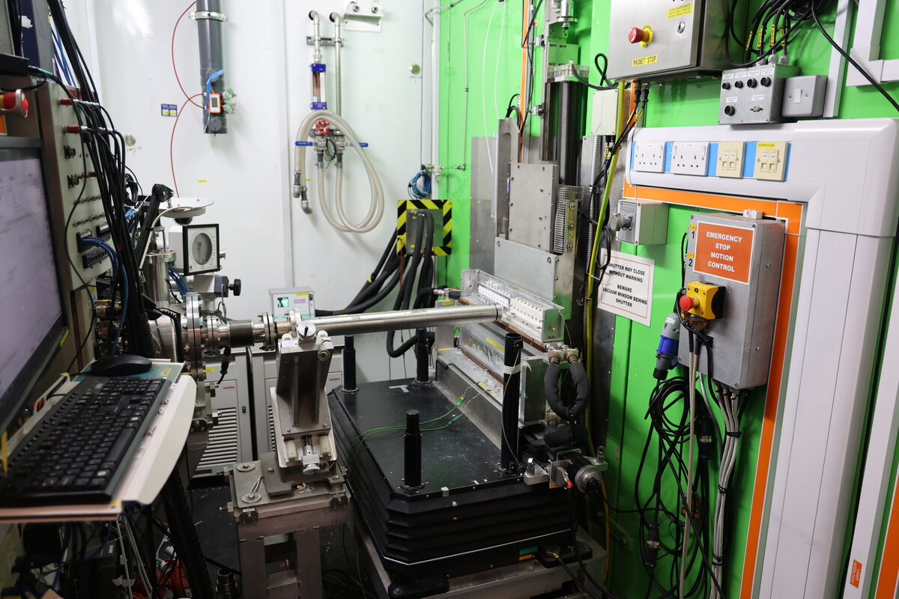

SANS2d: a time-of-flight small-angle neutron scattering instrument
Explore the SANS2d instrument, from source to detector, and understand how each component contributes to generating our high-quality small-angle neutron scattering (SANS) data. Click on the components to find out more information about them, and see our short video guide with one of our instrument scientists.
The sample area
The SANS2d instrument is a time-of-flight instrument

SANS2d schematic
The neutron beam travels left to right, straight through the centre of every component. Click a component, or use the arrow keys, to see what it does.
Neutron flight path
Physical description
Function
Technical specifications
Not satisfied? Meet SANS2d directly from our instrument scientists
Meet Dr Scientist in the video who will tell you more about SANS2d and the types of science that we typically see on SANS2d.